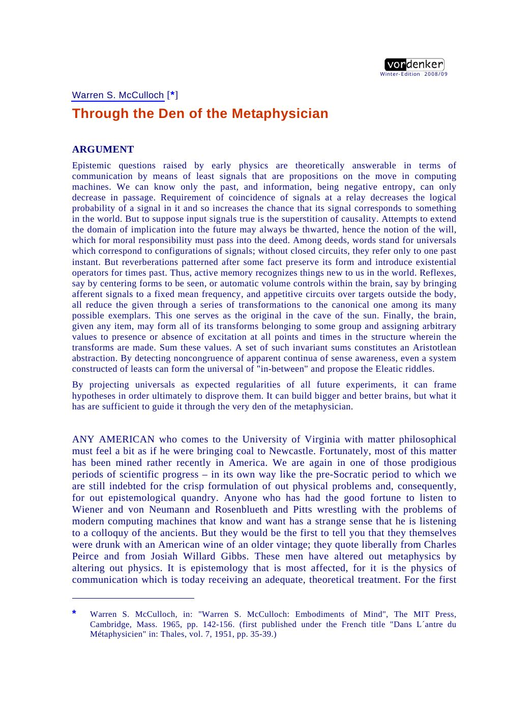
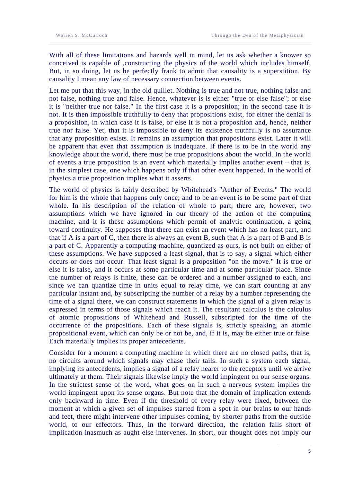
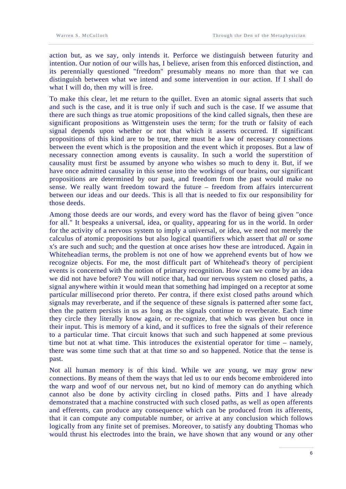
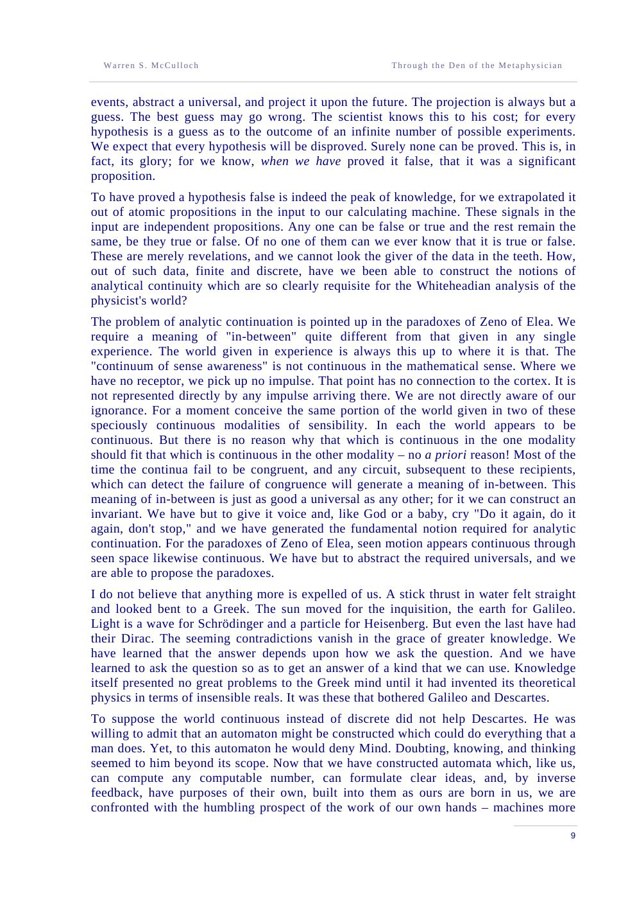

Thalès · Vol. 7 · 1951 · first published as “Dans l'antre du Métaphysicien”
Through the Den of the Metaphysician
A lecture on how a computing machine can know a world that includes itself. Its most famous sentence is not about machines at all: “let us be perfectly frank to admit that causality is a superstition.” What follows is a theory of signals, time, will, and the courage to proceed serenely.
Read the plateThe thesis
A signal implies only its past. The future is not implied — only intended.
McCulloch asks Clerk Maxwell's question — does the way to the relation between thought and molecular motion lie through the den of the metaphysician, strewn with the bones of former explorers? — and answers with a split: “Let us peacefully answer the first half of his question ‘Yes,’ the second half ‘No,’ and then proceed serenely.”
The knower is a computing machine of relays. Its least signal is an atomic proposition on the move. Because information cannot increase in passage, the machine can only corrupt revelation. Because implication runs backward in time, thought cannot guarantee action. The gap between them is what we call the will.
The wager: if causality is a law of necessary connection between events, then it is a superstition — but a necessary one. The machine cannot operate on the future; it can only carry the past forward and act on a guess.
Laboratory · the two arrows
Fire a signal. Try to make the future obey.
A signal at the present implies its antecedents with necessity: follow the solid arrows left and you reach the receptors. In the other direction the arrows are dashed. An intervention from the world can arrive at the effector before the intended impulse does. That is not a failure of the machine; it is the structure of time.
Implication, intention, intervention
Fire the signal, then intervene. The past is always implied; the future is only intended, and can be thwarted.
past—
future—
will—
The argument
Why the future is not implied.
In a net without circles, a signal at any point implies a signal nearer the receptors, and so backward in time until the receptors are reached. The domain of implication is the past. Add circles and the net can assert that there was some time at which something happened — an existential quantifier — but still not when.
In the forward direction, something else may intervene between the conception of an act and the arrival of impulses at the motor horn cell. The relation falls short of implication. “Our thought does not imply our action but, as we say, only intends it.”
The arrow backward. A signal here and now implies that its antecedents occurred. The tense is past; the reference to time may be indefinite.
No arrow forward. The future is open to intervention. This is why a machine can intend without guaranteeing, and why the will is not a ghost but a gap.
The second law of computation. Entropy increases; information cannot. The machine is “a device, however complicated, which can only corrupt revelation.”
The voice
The most quotable McCulloch.
“Let us peacefully answer the first half of his question ‘Yes,’ the second half ‘No,’ and then proceed serenely.”
“But, in so doing, let us be perfectly frank to admit that causality is a superstition.”
“Each is a device, however complicated, which can only corrupt revelation.”
“Our thought does not imply our action but, as we say, only intends it.”
“If I shall do what I will do, then my will is free.”
“It can build bigger and better brains, but what it has are sufficient to guide it through the very den of the metaphysician.”
The paper itself
Pages from 1951
click to enlarge




Why it matters
An ethics of epistemic humility.
This lecture is the philosophical heart of McCulloch's programme. It explains why a machine can be intelligent without being omniscient, why prediction is not deduction, and why responsibility survives determinism. The future is not known; it is acted into.
It also gives the codex its most useful warning: a system that confuses the strength of its inferences with the openness of the future will be either a fatalist or a fanatic. The alternative is to proceed serenely, with hypotheses of low a priori probability and the courage to let them be refuted.
Read next: Mysterium Iniquitatis, where the machine question becomes a question about God, sin, and the limits of knowledge.